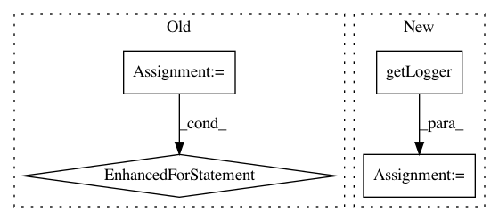

14bb858104484f1144653a9cfbc43b7dd5283f32,PyInstaller/hooks/hook-PySide2.QtQuick.py,,,#,17
Before Change
]
// TODO: we should parse the Qml files to see what we need to import.
dirs = ["Qt",
// "QtAudioEngine",
// "QtGraphicalEffects",
// "QtMultiMedia",
"QtQml",
"QtQuick",
"QtQuick.2",
// "QtSensors",
// "QtTest"
]
qmldir = qt5_qml_dir("PySide2")
// Add base qml directories
datas = [qt5_qml_data(qmldir, dir) for dir in dirs]
// Add qmldir and *.qmltypes files
for dir in dirs:
datas.extend(qt5_qml_plugins_datas(qmldir, dir))
// Add binaries
binaries = []
for dir in dirs:
binaries.extend(qt5_qml_plugins_binaries(qmldir, dir))
import pprint
After Change
from PyInstaller.utils.hooks import get_qmake_path, exec_command
from PyInstaller import log as logging
logger = logging.getLogger(__name__)
def qt5_qml_dir():
qmake = get_qmake_path("5")
In pattern: SUPERPATTERN
Frequency: 3
Non-data size: 4
Instances
Project Name: pyinstaller/pyinstaller
Commit Name: 14bb858104484f1144653a9cfbc43b7dd5283f32
Time: 2018-04-02
Author: bjones@ece.msstate.edu
File Name: PyInstaller/hooks/hook-PySide2.QtQuick.py
Class Name:
Method Name:
Project Name: PacktPublishing/Deep-Reinforcement-Learning-Hands-On
Commit Name: 3e2ac59ff4fc48a9eef1d348bc0022bd5e97a0fb
Time: 2018-01-02
Author: max.lapan@gmail.com
File Name: ch12/tools/sub_reader.py
Class Name:
Method Name:
Project Name: CyberReboot/NetworkML
Commit Name: a370d0b0b5850766f58909fb0eb04fbd940cfb2f
Time: 2017-09-06
Author: CStephenson970@gmail.com
File Name: TraditionalML/eval_OneLayer.py
Class Name:
Method Name: